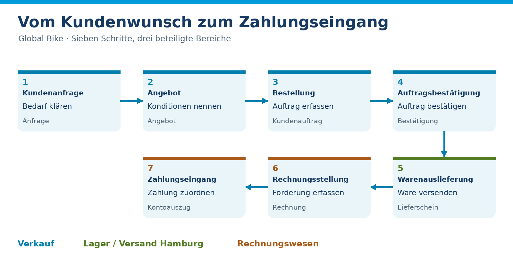
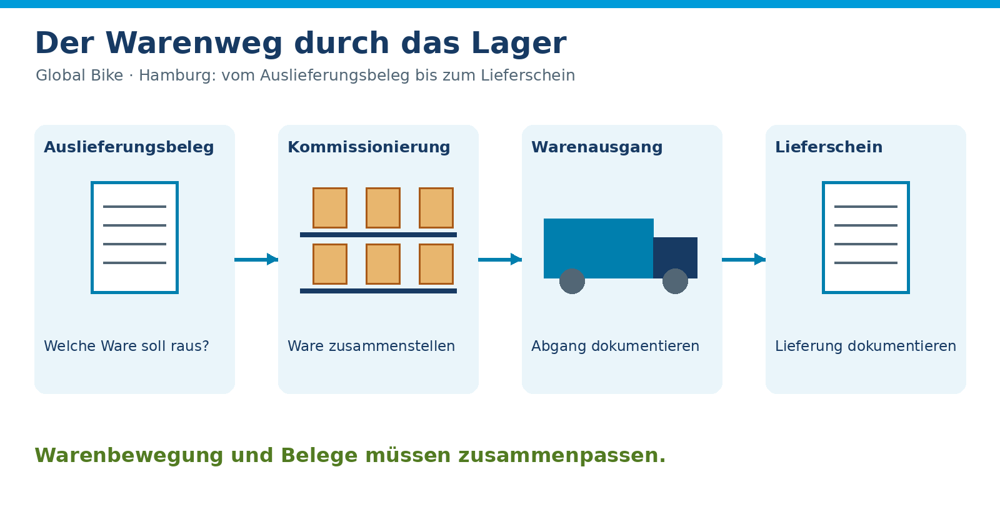

Belegfluss rekonstruieren
Lesen Sie M02.1 bis M02.3. Ordnen Sie zu jedem Prozessschritt den Beleg und die kontrollierende Abteilung. Markieren Sie, aus welchen Erklärungen ein Kaufvertrag hervorgeht.
Notizen


Eine Überweisung fällt niedriger aus als die Rechnung. Ist der Abzug berechtigt, fehlt Ware oder ist im Büro etwas falsch gelaufen? Wer Bestellung, Lieferschein, Rechnung und Kontoauszug nebeneinanderlegt, kann eine Kundenreklamation begründet beantworten.
Eine erprobte Arbeitshilfe für Jan, Emma und die Verkaufsabteilung. Sie enthält den Belegfluss der drei Originalaufträge, die Berechnungen, den belegten Bearbeitungsstand und konkrete Kontrollschritte für den nächsten Auftrag.
Du entscheidest, welche Aufgaben du selbstständig oder mit anderen bearbeitest. Für die Rückmeldung erhält jede Person ein fremdes Produkt.
15 MinutenDie Gewichtung zeigt, wie häufig und wofür die Kompetenz in den Aufgaben gebraucht wird. 1 bedeutet „kurz in einer Aufgabe“, 6 „von der Vorbereitung bis zur Auswertung“.
| Kompetenz | Gewicht (1–6) | Was übe ich? |
|---|---|---|
| F · Fachkompetenz | 6 / 6 | Ich kontrolliere Kundenaufträge anhand von Belegen, Beträgen und Fristen und begründe den nächsten Arbeitsschritt. |
| P · Personalkompetenz | 5 / 6 | Ich dokumentiere belegte Abweichungen und kennzeichne mögliche Ursachen als Vermutung. |
| S · Sozialkompetenz | 4 / 6 | Ich formuliere Prüfhinweise für Mitarbeitende und gebe Rückmeldung mit einer konkreten Fundstelle. |
| M · Methodenkompetenz | 6 / 6 | Ich verknüpfe Belegnummern und prüfe Mengen, Zahlbeträge und Fristen systematisch. |
| D · Medienkompetenz | 5 / 6 | Ich gestalte eine übersichtliche Anleitung, in der ein fremder Mitarbeiter eine Prüfung nachvollziehen kann. |
In der Verkaufsabteilung von Global Bike häufen sich Rückfragen aus Ostfriesland. Jan Richter berichtet von einem Kunden, dessen Liefermenge von der Bestellung abweicht. Ein anderer hält den Rabatt auf seiner Rechnung für falsch.
Emma Fuchs hat in der Verwaltung geringere Zahlungseingänge festgestellt, als auf den Rechnungen stehen. Sie möchte wissen, ob die Kunden zu Recht Skonto abziehen durften. Jan und Emma legen Ihnen drei Aufträge vom November 2026 vor. Untersuchen Sie die Belegketten vom Kundenkontakt bis zur Zahlung. Bereiten Sie eine Arbeitshilfe vor, mit der die Mitarbeitenden die nächsten Aufträge zuverlässig kontrollieren können.
Lesen Sie M02.1 bis M02.3. Ordnen Sie zu jedem Prozessschritt den Beleg und die kontrollierende Abteilung. Markieren Sie, aus welchen Erklärungen ein Kaufvertrag hervorgeht.
Notizen
Lesen Sie die drei Belegsätze in M03. Übernehmen Sie je Auftrag Kundenname, Belegnummern und vereinbarte Bedingungen in Ihre Arbeitsnotizen. Kennzeichnen Sie, ob eine Zahlung dokumentiert ist.
Notizen
Rechnen Sie das Beispiel in M02.4 und M02.5 nach. Notieren Sie für jede Stufe den Grundwert und die Rundung auf Cent. Bestimmen Sie für die Zahlungsprüfung, welches Datum die Frist auslöst.
Rechenweg · 5-mm-Karo
Planen Sie mit M02 und M03 eine Prüfung vom Kundenkontakt bis zur Zahlung. Vermerken Sie, wann Sie Belege vergleichen, Fristen ermitteln, rechnen und Ihre Arbeitshilfe erproben.
Rechenweg · 5-mm-Karo
Eine erprobte Arbeitshilfe für Jan, Emma und die Verkaufsabteilung. Sie enthält den Belegfluss der drei Originalaufträge, die Berechnungen, den belegten Bearbeitungsstand und konkrete Kontrollschritte für den nächsten Auftrag.
Vergleichen Sie die drei Aufträge aus M04 bis M06. Entscheiden Sie, welche Form Ihnen hilft, eine belegte Abweichung im Vertrieb sichtbar zu machen. Begründen Sie Ihre Wahl an einem konkreten Beleg.
Notizen
Eine erprobte Arbeitshilfe für Jan, Emma und die Verkaufsabteilung. Sie enthält den Belegfluss der drei Originalaufträge, die Berechnungen, den belegten Bearbeitungsstand und konkrete Kontrollschritte für den nächsten Auftrag.
Prüfen Sie alle drei Kundenaufträge aus M03. Vergleichen Sie Vereinbarung, Lieferung, Rechnung und die jeweils dokumentierte Zahlung. Rechnen Sie Nettowert, Rabatt, Umsatzsteuer und gegebenenfalls Skonto nach. Halten Sie jeden Abgleich mit Belegnummer und Datum fest.
Rechenweg · 5-mm-Karo
Legen Sie drei Vorgänge an. Ordnen Sie die Belege, zeigen Sie den Rechenweg und ergänzen Sie pro Vorgang einen begründeten Bearbeitungsstand. Testen Sie Ihr Prüfformular an einer zweiten Belegkette. Auftrag M04
Rechenweg · 5-mm-Karo
Führen Sie Mitarbeitende von der Anfrage bis zum Zahlungseingang. Zeigen Sie an den drei Aufträgen, was zu vergleichen ist, wie eine Abweichung erkennbar wird und wer sie klärt. Testen Sie einen Durchgang mit M03.
Rechenweg · 5-mm-Karo
Zeigen Sie für alle drei Aufträge relevante Belege und sprechen Sie Rechenschritte sowie Fristen verständlich aus. Schließen Sie jede Sequenz mit einem Kontrollhinweis. Ein sichtbarer Belegausschnitt reicht als Bild. Auftrag M06
Rechenweg · 5-mm-Karo
Formulieren Sie für jeden Auftrag, was erledigt ist und welche Frage offenbleibt. Trennen Sie festgestellte Abweichungen von möglichen Ursachen. Leiten Sie eine konkrete Fehlerkontrolle für Verkauf, Lager oder Rechnungswesen ab. Belegprüfung in M02
Notizen
Reiche deine Arbeit in der Moodle-Aktivität „Peer-Feedback“ ein. Verwende neutrale Titel und Dateinamen. Entferne Namen aus Text und Dateieigenschaften. Bei einem gemeinsamen Produkt reicht jede Person eine Kopie im eigenen Konto ein. Ohne eingerichtete Aktivität verteilt die Lehrkraft codierte Arbeiten.
Notizen
Prüfe die dir zugeteilte Arbeit mit den Kriterien unten. Benenne eine konkrete Fundstelle, eine fachlich gelungene Stelle und einen begründeten Verbesserungsvorschlag. Gib die Rückmeldung in Moodle oder mit dem ausfüllbaren Peer-Bogen ab. Dein Name ist für die empfangende Person sichtbar.
Notizen
Lies das Feedback zu deinem Produkt. Verbessere die genannte Stelle oder begründe am Material, weshalb du deine Fassung beibehältst. Ergebnis ist die für die weitere Verwendung geprüfte Fassung.
Notizen
Fülle die Aktivität „Feedback“ im Moodle-Kurs aus. Melde zurück, welches Material geholfen hat, wo ein Auftrag unklar war, wie Zeit und Wahlmöglichkeiten passten und was wir ändern sollten. Verwende alternativ den ausfüllbaren Feedbackbogen und gib ihn wie vereinbart ab.
Notizen
Fünf Fachtexte mit sieben Schaubildern, Beispielrechnung, Zahlungsfristen und Prüffragen.
Belegketten für KA2601 Alster Cycling, KA2602 Drahtesel und KA2603 VeloDOM mit Originalbeträgen und vereinbarten Fristen.
Originalaufträge M04 bis M06 für Auftragsprüfmappe, Prozessleitfaden und Erklärvideo.
Abfolge vom ersten Kundenkontakt bis zur Zahlung.
Bei KA2601 lässt sich der Weg von der Anfrage bis zum Kontoauszug verfolgen. (M02.1, M03)
Bitte um Auskunft über Ware, Preise oder Liefermöglichkeiten.
Die Anfrage von Alster Cycling steht vor dem konkreten Angebot. (M02.1, M03)
Erklärung, zu bestimmten Bedingungen einen Vertrag schließen zu wollen.
Bei KA2601 steht im Angebot, wie lange es verbindlich ist. (M02.2, M03)
Mitteilung über die Annahme oder Bestätigung der Bestellung zu benannten Bedingungen.
Bei Drahtesel gibt die bestätigte Bestellung die vereinbarte Menge vor. (M02.1, M03)
Zusammenstellen der bestellten Ware im Lager.
Für KA2602 ist die vom Lager bereitgestellte Menge für die Prüfung interessant. (M02.3, M03)
Beleg über Artikel und Mengen einer Lieferung.
In LS-2602 steht, wie viele Helme die Lieferung enthielt. (M02.3, M03)
Dokument, mit dem der Verkäufer die Ware oder Leistung abrechnet.
RE-2603 enthält Nettobetrag, Steuer und Betrag, den VeloDOM zahlen soll. (M02.3, M03)
Preisnachlass auf den vereinbarten Ausgangspreis.
Die Auftragsbestätigung für die Luftpumpen nennt einen Rabatt auf den Warenwert. (M02.4, M03)
Steuer auf den steuerpflichtigen Umsatz, im Beispiel auf das Nettoentgelt nach Rabatt.
Prüfen Sie in RE-2603, auf welchen Grundwert die 19 Prozent angewendet werden. (M02.4, M03)
Vereinbarter Preisnachlass bei Zahlung innerhalb bestimmter Frist.
Bei VeloDOM sind neben dem Betrag das Rechnungs-Empfangsdatum und der Zahlungstag nötig. (M02.4, M03)
Noch nicht vollständig ausgeglichene Forderung.
Ein verringerter Zahlungseingang kann eine offene Restforderung hinterlassen. Prüfen Sie zunächst die Skontobedingung. (M02.5, M03)
Vergleich von Artikel, Menge, Preis und Bedingungen mit der tatsächlichen Leistung und Vereinbarung.
Die Rechnungsmenge der Helme lässt sich mit der bestätigten Liefermenge abgleichen. (M02.3, M03)



| Schritt | Funktion |
|---|---|
| Kundenanfrage | Was möchte der Kunde? |
| Angebot | Zu welchen Bedingungen kann geliefert werden? |
| Bestellung | Was bestellt der Kunde? |
| Auftragsbestätigung | Was bestätigt Global Bike? |
| Warenauslieferung | Was wird geliefert? |
| Rechnungsstellung | Was muss bezahlt werden? |
| Zahlungseingang | Was wurde bezahlt? |
Merke: Der Belegfluss verbindet die Dokumente eines Auftrags.

Ein Kaufvertrag entsteht durch zwei übereinstimmende Willenserklärungen. Global Bike muss die vereinbarte Ware liefern und der Kunde muss sie abnehmen und bezahlen.
Merke: Eine Anfrage allein ist noch kein Kaufvertrag.

Bei der Kommissionierung wird die bestellte Ware zusammengestellt. Der Warenausgang dokumentiert, dass die Ware das Lager verlässt.

| Prüfung | Leitfrage |
|---|---|
| Formell | Sind notwendige Angaben vorhanden? |
| Sachlich | Stimmen Mengen, Preise und Vereinbarungen? |
| Rechnerisch | Sind Beträge richtig berechnet? |
Merke: Eine rechnerisch richtige Rechnung kann sachlich falsch sein.

| Beispiel | Betrag |
|---|---|
| Warenwert netto | 1.000,00 € |
| − 10 % Rabatt | 100,00 € |
| = Nettobetrag | 900,00 € |
| + 19 % Umsatzsteuer | 171,00 € |
| = Bruttobetrag | 1.071,00 € |
| − 2 % Skonto | 21,42 € |
| = Zahlbetrag | 1.049,58 € |
Merke: Rabatt wird hier vom Nettowarenwert, Umsatzsteuer vom verminderten Nettobetrag und Skonto vom vereinbarten Bruttobetrag berechnet.

Prüfen Sie, wer wann wie viel für welche Rechnung bezahlt hat. Im Beispiel aus M02.4 ist bei rechtzeitigem Skonto der Zahlbetrag 1.049,58 €. Ohne Skontoberechtigung bleiben bei dieser Zahlung 21,42 € offen.

Merke: Ein offener Posten ist eine noch nicht vollständig ausgeglichene Forderung.

Ausgangsrechnung – Dokument, mit dem der Verkäufer die Ware oder Leistung abrechnet. RE-2603 enthält Nettobetrag, Steuer und Betrag, den VeloDOM zahlen soll.
Sachliche Rechnungsprüfung – Vergleich von Artikel, Menge, Preis und Bedingungen mit der tatsächlichen Leistung und Vereinbarung. Die Rechnungsmenge der Helme lässt sich mit der bestätigten Liefermenge abgleichen.
Text als Markdown herunterladen · Zur Materialübersicht

Die folgenden Belege sind vereinfachte Unterrichtsbelege. Preise, Termine und Belegnummern sind didaktische Falldaten, keine SAP-Bewegungsdaten. Alle Daten beziehen sich auf November 2026.
| Beleg | Datum | Inhalt |
|---|---|---|
| Kundenanfrage | 02.11. | 50 Wasserflaschen BOTL1000 |
| Angebot | 03.11. | 50 × 10,00 € netto; verbindlich bis 06.11.; frei Haus bis 10.11.; Zahlung binnen 30 Tagen ab Rechnungserhalt |
| Bestellung | 04.11. | Angebot unverändert angenommen |
| Auftragsbestätigung | 05.11. | Bestellung unverändert bestätigt |
| Lieferschein | 09.11. | 50 Wasserflaschen aus Hamburg; Empfang bestätigt |
| Rechnung RE-2601 | 09.11. | Netto 500,00 €; USt 95,00 €; brutto 595,00 € |
| Kontoauszug | 20.11. | 595,00 € von Alster Cycling, RE-2601 |
| Beleg | Datum | Inhalt |
|---|---|---|
| Bestellung B-2602 | 04.11. | 20 Geländehelme OHMT1000 × 40,00 € netto; vollständige Lieferung bis 12.11.; keine Teillieferung; unverändert bestätigt |
| Lieferschein LS-2602 | 10.11. | 15 Helme aus Hamburg; Empfang bestätigt |
| Rechnung RE-2602 | 10.11. | 20 × 40,00 €; netto 800,00 €; USt 152,00 €; brutto 952,00 €; Zahlung binnen 30 Tagen ab Erhalt |
| Beleg | Datum | Inhalt |
|---|---|---|
| Auftragsbestätigung AB-2603 | 05.11. | 40 Luftpumpen PUMP1000 × 20,00 € netto; 10 % Rabatt; 19 % USt; 2 % Skonto auf Brutto binnen 10 Tagen ab Rechnungserhalt, 30 Tage netto |
| Rechnung RE-2603 | 10.11. | Vollständige Lieferung und Rechnungserhalt am 10.11.; Warenwert 800,00 €; Rabatt 80,00 €; netto 720,00 €; USt 136,80 €; brutto 856,80 € |
| Kontoauszug | 25.11. | 839,66 € von VeloDOM, RE-2603 abzgl. 2 % Skonto |
Erstellen Sie eine Auftragsprüfmappe für die Verkaufsabteilung der Global Bike Deutschland GmbH. Bereiten Sie Ihre Untersuchungsergebnisse so auf, dass die Mitarbeitenden nachvollziehen können, wie Kundenaufträge abgewickelt und überprüft werden. Entwickeln Sie auf Grundlage Ihrer Erkenntnisse Empfehlungen zur Vermeidung zukünftiger Fehler. Über die Gestaltung Ihrer Auftragsprüfmappe entscheiden Sie selbst.
Entwickeln Sie einen Prozessleitfaden für die Verkaufsabteilung der Global Bike Deutschland GmbH. Stellen Sie den Vertriebsprozess so dar, dass die Mitarbeitenden die einzelnen Arbeitsschritte und die notwendigen Überprüfungen nachvollziehen können. Nutzen Sie Ihre Erkenntnisse aus den Kundenaufträgen, um Möglichkeiten zur Fehlervermeidung aufzuzeigen. Über die Gestaltung Ihres Prozessleitfadens entscheiden Sie selbst.
Erstellen Sie ein Erklärvideo für die Mitarbeitenden der Global Bike Deutschland GmbH. Veranschaulichen Sie anhand der untersuchten Kundenaufträge, wie der Vertriebsprozess funktioniert, wie Aufträge überprüft werden und wie Fehler vermieden werden können. Bereiten Sie die fachlichen Zusammenhänge verständlich und anschaulich auf. Über die Gestaltung und Umsetzung Ihres Erklärvideos entscheiden Sie selbst.
Prüfen Sie das zugeteilte Handlungsprodukt anhand der gemeinsamen fachlichen Kriterien. Eine Fundstelle kann eine Textzeile, ein Bildausschnitt oder eine Zeitmarke in der Übergabe sein.
Wie lief die Arbeit an der Lernsituation „Ist der Kundenauftrag wirklich abgeschlossen?“? Beschreiben Sie Ihre Erfahrungen so konkret, dass die Lehrkraft den nächsten Durchgang daran anpassen kann.